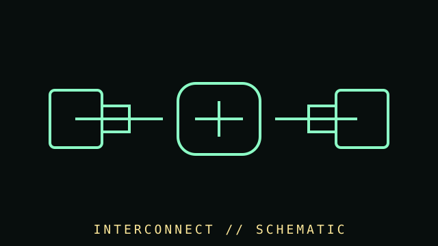

[ SUBCATEGORY DIRECTORY // 7 LEAF LISTINGS // 138 PART RECORDS ]
Browse cables subcategories
Each dedicated leaf listing links to its individually documented cable and adapter records.
Browse model- and standard-specific records with protocol, pinout, capability, safety notes, local schematics and references.
OPEN SUBCATEGORY FILE →SUBCATEGORY FILE // 31 PART RECORDSDisplay cables and adaptersBrowse model- and standard-specific records with protocol, pinout, capability, safety notes, local schematics and references.
OPEN SUBCATEGORY FILE →SUBCATEGORY FILE // 31 PART RECORDSData, peripheral, and high-speed cablesBrowse model- and standard-specific records with protocol, pinout, capability, safety notes, local schematics and references.
OPEN SUBCATEGORY FILE →SUBCATEGORY FILE // 11 PART RECORDSSerial and converter cablesBrowse model- and standard-specific records with protocol, pinout, capability, safety notes, local schematics and references.
OPEN SUBCATEGORY FILE →SUBCATEGORY FILE // 21 PART RECORDSNetwork and fiber cablesBrowse model- and standard-specific records with protocol, pinout, capability, safety notes, local schematics and references.
OPEN SUBCATEGORY FILE →SUBCATEGORY FILE // 04 PART RECORDSInternal front-panel cablesBrowse model- and standard-specific records with protocol, pinout, capability, safety notes, local schematics and references.
OPEN SUBCATEGORY FILE →SUBCATEGORY FILE // 03 PART RECORDSLegacy printer and parallel cablesBrowse model- and standard-specific records with protocol, pinout, capability, safety notes, local schematics and references.
OPEN SUBCATEGORY FILE →[ COMPONENT RECORD // CABLES & ADAPTERS ]
Cables &
adapters.
Cables and adapters carry power, data, video, audio, and control signals. Connector shape is only one clue: pinout, direction, protocol, version, wire gauge, shielding, and active electronics determine whether a connection is safe and functional.

CLASS RECORD: computer internal and external cabling. Never assume two visually similar or physically fitting power cables share a pinout.
Reference specifications
| Power | ATX/EPS, PCIe GPU, SATA power, Molex, barrel, USB-C PD, and proprietary laptop connectors. Voltage, current, polarity, and wire gauge must match. |
|---|---|
| Data | SATA, USB, Thunderbolt, Ethernet, legacy ribbon cables, and proprietary headers use different protocols and electrical limits. |
| Display | HDMI, DisplayPort, DVI, VGA, and USB-C modes differ in directionality, bandwidth, audio, adapters, and supported features. |
| Construction | Length, shielding, conductor gauge, bend radius, active retimers, certification, and cable quality influence reliability and supported rate. |
Safe selection
- Use the PSU manufacturer's exact-model cable compatibility chart; never reuse a modular cable from another PSU without verified pinout identity.
- Check adapter direction (for example, source-to-display is not necessarily reversible), supported signal modes, and power-delivery rating.
- Inspect for bent contacts, melted housings, cracked insulation, fraying, and excessive connector tension.
- For high-speed or high-current service, use certified products and follow official bend-radius, installation, and current limits.
- Photograph both ends and document pinout, wire colors, shield/drain, cable part number, length, and tested function.
Sources & further reading
- USB-IF — USB specifications and USB Type-C documentsPrimary standard references for USB connectors, data, and power.
- HDMI Licensing Administrator — HDMI specificationsOfficial technology and capability reference.
- VESA — DisplayPortDisplay interface information; check exact cable and device capabilities.